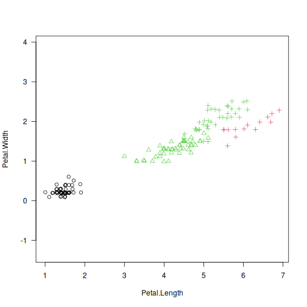
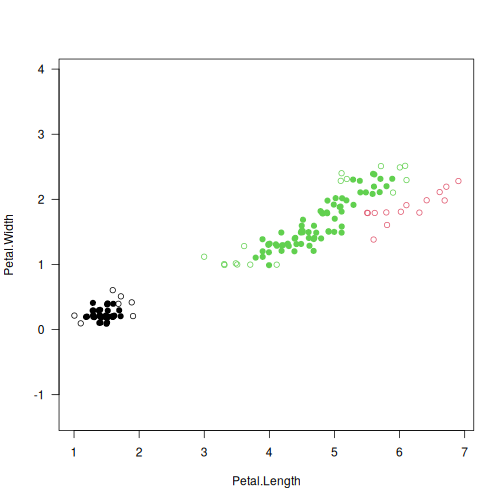

lumbermark: Lumbermark: Fast and Robust Clustering¶
Description¶
Lumbermark is a fast and robust divisive clustering algorithm which identifies a specified number of clusters.
It iteratively chops off sizeable limbs that are joined by protruding segments of a dataset’s mutual reachability minimum spanning tree.
The use of a mutual reachability distance (\(M>1\); Campello et al., 2013) pulls peripheral points farther away from each other. This way, Lumbermark gives an alternative to the HDBSCAN* algorithm that is able to detect a predefined number of clusters and indicate outliers (via deadwood; see Gagolewski, 2026).
Usage¶
lumbermark(d, ...)
## Default S3 method:
lumbermark(
d,
k,
min_cluster_size = 10,
min_cluster_factor = 0.25,
skip_leaves = (M > 0L),
M = 5L,
distance = c("euclidean", "l2", "manhattan", "cityblock", "l1", "cosine"),
verbose = FALSE,
...
)
## S3 method for class 'dist'
lumbermark(
d,
k,
min_cluster_size = 10,
min_cluster_factor = 0.25,
skip_leaves = (M > 0L),
M = 5L,
verbose = FALSE,
...
)
## S3 method for class 'mst'
lumbermark(
d,
k,
min_cluster_size = 10,
min_cluster_factor = 0.25,
skip_leaves = TRUE,
verbose = FALSE,
...
)
Arguments¶
|
a numeric matrix (or an object coercible to one, e.g., a data frame with numeric-like columns) or an object of class |
|
further arguments passed to |
|
integer; the desired number of clusters to detect |
|
integer; minimal cluster size |
|
numeric value in (0,1); output cluster sizes will not be smaller than |
|
logical; whether the MST leaves should be omitted from cluster size counting |
|
integer; smoothing factor; \(M \leq 1\) gives the selected |
|
metric used to compute the linkage, one of: |
|
logical; whether to print diagnostic messages and progress information |
Details¶
As with all distance-based methods (this includes k-means and DBSCAN as well), applying data preprocessing and feature engineering techniques (e.g., feature scaling, feature selection, dimensionality reduction) might lead to more meaningful results.
If d is a numeric matrix or an object of class dist, mst() will be called to compute an MST, which generally takes at most \(O(n^2)\) time. However, by default, a faster algorithm based on K-d trees is selected automatically for low-dimensional Euclidean spaces; see mst_euclid from the quitefastmst package.
Once a minimum spanning tree is determined, the Lumbermark algorithm runs in \(O(kn)\) time. If you want to test different parameters or \(k\)s, it is best to compute the MST explicitly beforehand.
Value¶
lumbermark() returns an object of class mstclust, which defines a \(k\)-partition, i.e., a vector whose \(i\)-th element denotes the \(i\)-th input point’s cluster label between 1 and \(k\).
The mst attribute gives the computed minimum spanning tree which can be reused in further calls to the functions from genieclust, lumbermark, and deadwood.
The cut_edges attribute gives the \(k-1\) indexes of the MST edges whose omission leads to the requested \(k\)-partition (connected components of the resulting spanning forest).
References¶
M. Gagolewski, lumbermark, in preparation, 2026
R.J.G.B. Campello, D. Moulavi, J. Sander, Density-based clustering based on hierarchical density estimates, Lecture Notes in Computer Science 7819, 2013, 160-172, doi:10.1007/978-3-642-37456-2_14
M. Gagolewski, A. Cena, M. Bartoszuk, Ł. Brzozowski, Clustering with minimum spanning trees: How good can it be?, Journal of Classification 42, 2025, 90-112, doi:10.1007/s00357-024-09483-1
M. Gagolewski, deadwood, in preparation, 2026
M. Gagolewski, quitefastmst, in preparation, 2026
See Also¶
The official online manual of lumbermark at https://lumbermark.gagolewski.com/
mst() for the minimum spanning tree routines
Examples¶
library("datasets")
data("iris")
X <- jitter(as.matrix(iris[3:4]))
y_pred <- lumbermark(X, k=3)
y_test <- as.integer(iris[,5])
plot(X, col=y_pred, pch=y_test, asp=1, las=1)

# detect 3 clusters and find outliers with Deadwood
library("deadwood")
y_pred2 <- lumbermark(X, k=3)
plot(X, col=y_pred2, asp=1, las=1)
is_outlier <- deadwood(y_pred2)
points(X[!is_outlier, ], col=y_pred2[!is_outlier], pch=16)
